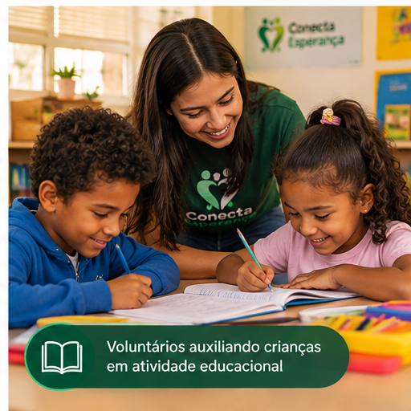

Conecta Saber
O Conecta Saber oferece atividades educacionais gratuitas para crianças, jovens e adultos, incentivando o aprendizado e o desenvolvimento de novas habilidades.
As atividades incluem reforço escolar, oficinas de leitura, informática básica e orientação para o mercado de trabalho.
Objetivo
Ampliar o acesso à educação e criar novas oportunidades de desenvolvimento.